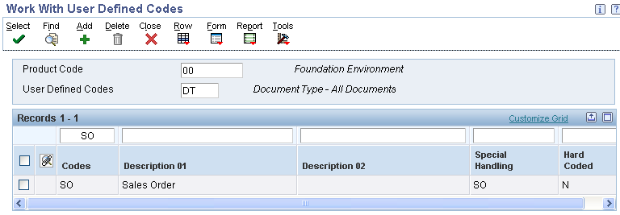
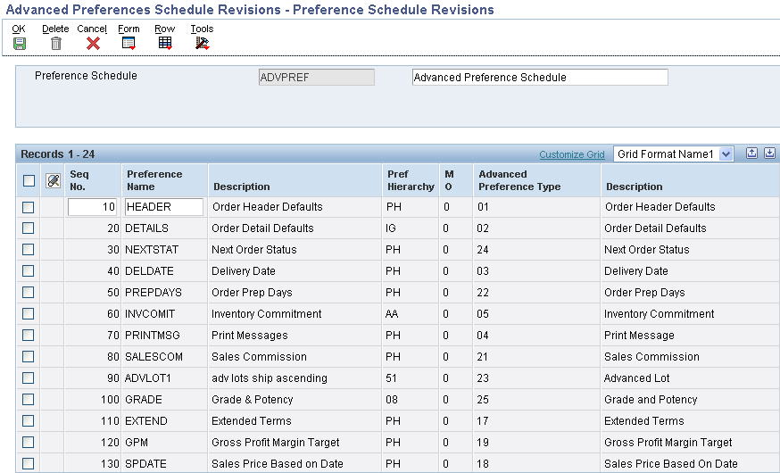
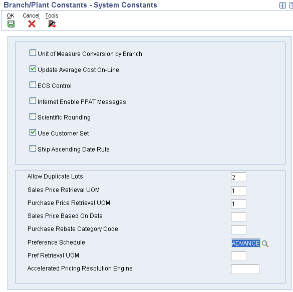

This document describes the setup that is needed in order to use Advanced Preferences in EnterpriseOne 8.9 and higher.
Details
Overview
Advanced Preferences were developed to provide the capability of preference functionality to work with complex Item Groups and complex Customer Groups. Basic preference functionality can still be used in 8.9, but any new preference functionality will most likely be created as an Advanced Preference. Note: Not all basic preferences have been made available in Advanced Preferences.
Advanced Preferences use the same setup applications that are used in Advanced Pricing. New processing options specify whether P4070, P4071 and P4072 are running in Pricing or Preference mode. The Preference Values Definition (F40711) table determines what fields are returned and what additional driver fields are available for each preference. Note: Modification of the values in the Preference Values Definition (F40711) table is not supported and may produce unpredictable results.
If complex groups are used, the customer /item group needs to be specified in the adjustment name. Go to application P4071 - Advance Preference name revisions and select the adjustment and enter item/customer group.
When using Advanced Preferences the system performs the following steps:
Checks the System Constants to see if a Preference Schedule has been entered.
Checks the processing option for Sales Order Entry (P4210) to see if there is an override schedule (if resolving Sales Order preferences).
If a schedule exists, verify whether the specific preference type has been defined for that schedule.
If the preference type is defined for the schedule, the Advanced Preference logic is performed to resolve the preference.
If no schedule was found or the preference type was not found to be defined for the schedule, preferences will be resolved the old (basic) way.
If multiple adjustments for same preference type apply (customer/item meet criterion for more than one complex group), the preference will be resolved based on sequence and the last adjustment value returned will be used.
Note: Both F4070 and F4071 are cached, and so any changes made to those records will require the cache to be refreshed before they go in effect.
Note: Advanced Preferences are not applied to 'T' Text Line Type records.
Advanced Preference Types
Type
Description
Advanced Preference Functionality
01
Order Header Defaults
Sales Order Entry
02
Order Detail Defaults
Sales Order Entry
03
Delivery Date
Sales Order Entry
04
Print Messages
Document Printing (Sales Invoice, Bill of Lading, Pick Slips, etc.)
Assign an override Preference Schedule in the Sales Order Entry (P4210) processing options (Optional)
Note: Another required step involves the setup of the Preference Values Definition (F40711) table. The data in this table is part of pristine data and should not be altered. However, populating this table with pristine data is a pre-requisite for Advanced Preferences to work.
Document Types
In order for Advanced Preferences to resolve, UDC 00/DT must have the Document Type specified in the Special Handling Code.

Advanced Preferences Name Revisions
From menu G40311 select Advanced Preferences Name Revisions (P4071).
Creating a new Preference Name will generate an entry in the 40/TY UDC table. A '2' will be placed in the Special Handling Code to indicate that this is a Preference Name rather than a Price Adjustment. Note: If the top field on the form is titled &clickstream=no"Adjustment Name" instead of "Preference Name", then the wrong version of P4071 is being executed or the processing mode in the processing options is not set to '1'.
Processing Options for Advanced Preferences
The first processing option determines whether the application is running in Pricing or Preference mode. The other processing options control what versions of the other applications are called when taking row or form exits. These versions must have the processing mode set to match the mode in the first processing option. These processing options are available for: P4070, P4071 and P4072.
Advanced Preferences Schedule Revisions
From menu G40311 select Advanced Preference Schedule Revisions (P4070). Note: Both F4070 and F4071 are cached, and so any changes made to those records will require the cache to be refreshed before they go in effect.
Define the Preference Schedule. Select one or more Preference Names to make up the Preference Schedule.
Creating a new Preference Schedule will generate an entry in the 40/AS UDC table. A '1' will be placed in the Special Handling Code to indicate that this is a Preference Schedule rather than a Pricing Schedule.
Note: If the top field on the form is titled "Adjustment Schedule" instead of "Preference Schedule", then the wrong version of P4070 is being executed or the processing mode in the processing options is not set to '1'.

Note: The Present Design of Advanced preference (Releases 8.9 to present release) regarding the sequencing within the Preference Schedule is to follow the order listed below. It is not coded to consider the sequence order specified in Preference Schedule (P4070). 1. Order Prep Days (22) 2. Delivery Date (03) 3. Order Detail Defaults (02) 4. Print Message (04) 5. Commission Code (21) 6. Sales Price Based On Date (18) 7. Advanced Lot (23) 8. Fulfillment Entry (41) 9. Internal Sales Order Tax Date (46) 10. Grade and Potency (25) 11. Inventory Commitment (05) The Inventory Commitment preference will be resolved during the sales order commitment processing. 12. Next Order Status (24) 13. Gross Profit Margin Target (19)
If the Inventory Commitment Processing Option is activated within the Sales Order Entry (P4210) Processing Option Preference tab, then the system will only resolve these two preferences: Order Prep. Days (22) & Delivery Date (03) again after the Inventory Commitment Preference is resolved during the commitment processing time. All the other listed Preferences will be resolved during the sales order detail grid tab down process (i.e., F4211 Edit Line Process). The Inventory Commitment Preference can also be resolved during the Print Pick Slip (R42520) UBE Process.
Advanced Preference Detail Revisions
From menu G40311 select Advanced Preference Detail Revisions (P4072).
Select an existing detail record or press Add to create a new Preference Detail. The preference hierarchy selection form will appear. Which hierarchy options appear is based on the preference hierarchy defined for this preference during Preference Name Definition. Specify the desired Item, Customer, Item Group, Customer Group and Date Range.
A row exit must be selected to access the Preference Detail values. The additional Driver fields (if any) and Return fields that appear on this form are dependent upon the Advanced Preference Type.
Note: If no fields appear in the grid other than Sequence, the Preference Values Definition (F40711) table has not been setup correctly for this preference type. To populate the Preference Values Definition (F40711) correctly run the Preference Values Definition (F40711) Update (R40711S). Clients upgrading from 8.9 to 8.10 will need to run this UBE.
The fields in the grid that are in BLACK font are part of the Preference Key, and the fields in BLUE font are the Preference Values.
Multiple Searches
All preferences are designed to search the Preference Hierarchy and when they find a match, the program will resolve the preference and will not continue searching to find a match at lower levels.
For example assume the hierarchy is setup with sold to customer number & item number as level 1 and sold to customer group & item number as level 2.
If an exact match exists for level 1 (customer number & item number), the preference selects that record, resolves the preference and stops searching. Once a match occurs, the system will not keep searching for matches at lower levels. For example if the customer address is also included in the customer group and item causing a match at level 2, that match will not be found and the preference will not get resolved for the level 2 search.
If you want multiple searches you would have to use Advanced Preferences and setup two or more Preference Names for Preference Type using different Preference Hierarchies for each Preference Name and then include all the Preference Names in the Advanced Preference Schedule.
For Example you could setup two Type 06 Product Allocation Advanced Preferences as follows:
Preference Name: PRODALL1 Preference Hierarchy Name: PA1 with Sold To Customer Number and Item Number set to Level 1.
Preference Name: PRODALL2 Preference Hierarchy Name: PA2 with Sold To Customer Group and Item Number set to Level 1.
Put both PRODALL1 and PRODALL2 in the Advanced Preference Schedule (ADVPREF).
Populate ADVPREF in the Preferences Tab Option of Sales Order Entry for Override Advanced Preference Schedule.
When the sales order is entered, the PRODALL1 preference will be processed and the preference will be resolved if the search hierarchy returns a match on customer number and item number. Next the PRODALL2 preference will be processed and the preference will be resolved if the search hierarchy returns a match on customer group and item number.
System Constants
Select the System Constants form exit from Branch/Plant Constants (P41001). Designate the Preference Schedule to be used system wide. Designate the Preference UOM selection (only used for Order Detail related preferences).

Sales Order Entry
Assign an override Preference Schedule in the Sales Order Entry (P4210) Preference Tab processing option #3 (Optional) if you wish to use a different preference schedule than is specified in the System Constants.
Preference History
History will only be written for those Advanced Preferences that are designated in Preference Name revisions. The same table that is currently used for Price History (F4074) will also contain entries for Advanced Preference history. A row exit from Customer Service Inquiry (P4210) will display the Advanced Preference history. Selecting a row on this form will display additional preference detail.
Return Values by Advanced Preference Types
01 - Order Header Defaults
Currency Code
Note: Advanced Preference 01 will not work with Transfer Orders (ST/OT). Advanced Preference 01 is designed to evaluate during order header creation. Transfer Orders do not have a typical order header, and thus Adv Pref 01 will not evaluate during Transfer Order creation.
02 - Order Detail Defaults
Price Schedule
Pricing Based on Date flag
Duty Status
Header Business Unit
End Use
Line of Business
Price as Ambient/Standard
Payment Terms Code
Payment Instrument
Price Code 1, 2, 3
Pricing Unit of Measure
Note: The Order Detail Defaults advanced preference is trickier than most because the same fields (ie: End Use, Duty Status, PC1, PC2 and PC3) are seen twice in the detail grid. The fields in the grid that are in BLACK font are part of the Preference Key, and the fields in BLUE font are the Preference Values. The BLUE ones are the values that will be written back to the Sales Order Detail line.
03 - Delivery Date
Transit Days
04 - Print Messages
Message ID
05 - Inventory Commitment
Carrier
Business Unit
Mode of Transport
Percent to Fill
Route
12 - Document Set
Document Set
13 - Options and Equipment
Delivery Line Level
Options/Equipment
14 - Customer Freight
Freight Rate Schedule
Freight Handling Code
Route Selection Type
Billable Freight Summary/Detail flag
Include/Exclude flag
Distance
Distance UOM
15 - Carrier
Include/Exclude flag
Preferred Carrier 1
Preferred Carrier 2
Preferred Carrier 3
16 - Mode of Transport
Mode of Transport
17 - Extended Terms
Payment Terms Code
18 - Sales Price Based On Date
Price Based on Date flag
Effective Date
19 - Gross Profit Margin Target
Lower Limit
Upper Limit
21 - Sales Commission
Salesperson Code
Sales Commission
Flat Commission Amount
Amount Per Unit
Commission Code Type
22 - Order Prep Days
Order Prep Days
23 - Advanced Lot
Check Best Before Date
Commitment Date Method
Check Expiration Date
Check Sell by Date
24 - Next Order Status
Next Status
25 - Grade and Potency
From Grade
Thru Grade
From Potency
Thru Potency
Days Past Expiration
If using Advanced Preferences, users can turn on or off the "Additive" functionality by changing the Special Handling Code in the 40/AP, meaning the preference will be resolved at all hierarchy points for all driver values. A 1 will activate the additive functionality; a blank will deactivate the Additive functionality stopping when the first match it found.
FAQ
Question 1: When attempting to create a sales order using the Create Sales Order (P42101) or the Sales Order Entry (P4210) where Advanced Preference types: Inventory Commitment Preference (05) is set up to default in a specific Branch Plant and Order Detail Defaults (02) has been activated to pull by the branch plant that was set up within the Inventory Commitment Preference (05) and the Inventory Commitment Preference (05) is located first on the schedule, the following issue occurs: The Order Detail Preference is not being resolved because the Inventory Commitment Preference which is first on the schedule is being resolved last by the system. The system ignores the sequence of the preferences within the schedule. Is this working as designed, why is the system not following the sequencing of the Advanced Preference Schedule (P4070)?
Answer 1: The Present Design of Advanced Preference (Releases 8.9 to 9.0) regarding the sequencing within the Preference Schedule is to follow the order listed below. It is not coded to consider the sequence order specified in Preference Schedule (P4070):
1. Delivery Date (03) 2. Order Detail Defaults (02) 3. Print Message (04) 4. Commission Code (21) 5. Sales Price Based On Date (18) 6. Advanced Lot (23) 7. Fulfillment Entry (41) 8. Internal Sales Order Tax Date (46) 9. Grade and Potency (25) 10. Inventory Commitment (05) The Inventory Commitment preference will be resolved during the sales order commitment processing. 11. Next Order Status (24) 12. Gross Profit Margin Target (19)
If the Inventory Commitment Processing Option is activated within the Sales Order Entry (P4210) Processing Option Preference tab, then the system will only resolve these two preferences: Order Prep. Days (22) & Delivery Date (03) again after the Inventory Commitment Preference is resolved during the commitment processing time. All the other listed Preferences will be resolved during the sales order detail grid tab down process (i.e., F4211 Edit Line Process). The Inventory Commitment Preference can also be resolved during the Print Pick Slip (R42520) UBE Process.
Question 2: Can Advanced Preference and Basic Preferences be activated at the same time.
Answer 2: Yes but if both Advanced Preference and Basic preference has been set up within the system, Advanced Preference will take precedence over Basic Preference. Also if a customer sets up an Advanced Preference and a Basic Preference that have the same available fields, the system will only apply the Advanced Preference and ignore the Basic Preference. For example: Advanced Preference Type 02 (Order Detail Defaults) and Basic Preference Type 47 (Pricing Unit of Measure by Branch) has been activated for a specific customer. The Advanced Preference 02 (Order Detail Defaults) has been set up to use the Pricing Unit of Measure (UOM) for EA (Each) and the Basic Preference type 47 (Pricing Unit of Measure) has been set up to bring in CA (Cases) by a specific branch plant for the same customer. The system will only apply the Advanced Preference, it will not apply the Basic preference this is per the design of the software.
Question 3: Does Advanced Preference 01 work with Transfer Orders?
Answer 3: No. Order Header Defaults will not work with Transfer Orders which have different header logic than other sales orders.
Question 4: Is it possible to bypass the transportation date calculations and use Delivery Date (Pref Type 03) to and Order Prep Days (Pref Type 22) advanced preferences to calculate scheduled pick and promised ship dates?
Answer 4: Yes. Please use the following setup:
1.Go into UDC 42/FR and find a Freight Handling Code (FRTH) set to Bypass Rating and Routing with a special handling value = 9. 2. Create a Sales Order (P4210 or P42101) and make sure the header is displayed first. 3. Populate Freight Handling Code (FRTH) to Bypass Rating and Routing. 4. Make sure Mode of Transport (MOT) is populated and not blank. 5. Make sure Carrier (CARS) is populated and not blank. 6. Populate the Header Requested Date with a date in the future that you want to be used to backward schedule other dates. 7. If the Delivery Date (Pref Type 03) to and Order Prep Days (Pref Type 22) preferences have been activated in the processing options and in the advanced preferences for the customer, the preferences will be used to calculate the dates and the transportation calculations will be Bypassed.